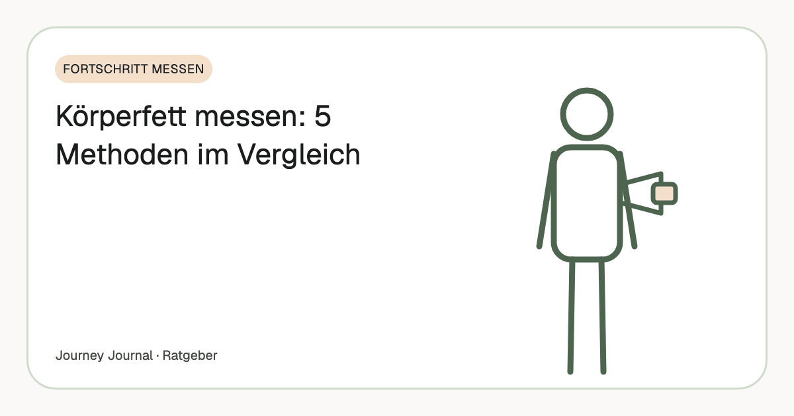

Ratgeber · Fortschritt messen · 8 Min. Lesezeit
Körperfett messen: Waage, Caliper, DEXA, Formel oder Foto? Was wirklich taugt
Wie viel Prozent deines Körpers Fett sind, kann keine Methode für zu Hause exakt bestimmen. Die Körperfettwaage, die Zange aus dem Fitnessstudio, eine Formel mit dem Maßband und der Vergleich mit Bildern liefern Schätzungen. Diese Schätzungen weichen teils deutlich voneinander ab. Für deinen Weg ist das weniger schlimm, als es klingt, denn beim Abnehmen zählt vor allem die Richtung. Hier erfährst du, wie die einzelnen Methoden funktionieren, wie genau sie laut Studien sind und welche Kombination deinen Verlauf verlässlich zeigt.

Teil unseres Guides: Fortschritt beim Abnehmen messen: Waage, Maßband, Fotos oder Video?
Kurz gesagt
- Jede Methode schätzt den Körperfettanteil. Auch DEXA, die genaueste verbreitete Methode, liefert nur unter gleichen Bedingungen vergleichbare Werte.
- Körperfettwaagen können im Einzelfall um viele Prozentpunkte danebenliegen. Für den Trend taugen sie, wenn du immer unter denselben Bedingungen misst.
- Umfangsformeln wie die US-Navy-Formel und Vergleichsbilder aus dem Netz geben eine grobe Orientierung. Als Messwert reichen sie nicht.
- Für den Verlauf beim Abnehmen zählt dieselbe Methode unter gleichen Bedingungen. Maßband und vergleichbare Fotos zeigen den Trend zuverlässig.
Warum es keinen exakten Körperfettwert für zu Hause gibt
Fett lässt sich am lebenden Menschen nicht direkt wiegen. Jede Methode misst etwas anderes, etwa den elektrischen Widerstand, die Dicke von Hautfalten, Umfänge oder die Schwächung von Röntgenstrahlen. Daraus rechnet eine Formel einen Fettanteil aus. Diese Formeln wurden an bestimmten Gruppen von Menschen entwickelt. Passt dein Körper gut zu dieser Gruppe, liegt der Wert näher an der Wirklichkeit. Bei sehr hohem Gewicht oder sehr viel Muskulatur wird die Schätzung unsicherer.
Deshalb zeigen zwei Geräte am selben Morgen oft verschiedene Zahlen. Keines davon ist kaputt, sie schätzen nur auf unterschiedlichen Wegen. Daraus folgt die wichtigste Regel dieses Artikels: Bleib bei einer Methode, statt zwischen Geräten zu wechseln. Wie Waage, Maßband, Fotos und Video zusammenspielen, steht im Überblick über die vier Messmethoden.
Körperfettwaage (BIA): bequem, aber launisch
Eine Körperfettwaage schickt einen schwachen, nicht spürbaren Strom durch deinen Körper und misst den Widerstand. Wasserreiches Gewebe wie Muskulatur leitet gut, Fett leitet schlechter. Aus dem Widerstand, deiner Größe, deinem Gewicht, deinem Alter und deinem Geschlecht berechnet das Gerät den Fettanteil. Die Methode heißt bioelektrische Impedanzanalyse, kurz BIA.
Wie genau ist eine Körperfettwaage?
Ein Team der Universität Kiel um Anja Bosy-Westphal hat 2008 mehrere Geräte für Verbraucher bei 106 Erwachsenen mit DEXA und MRT verglichen. Im Mittel lagen einige Waagen nah an den Referenzwerten. Für einzelne Personen war die Streuung aber groß. Bei Waagen, die nur über die Füße messen, wich der Fettanteil beim ungenauesten Gerät um bis zu 14,5 Prozentpunkte nach unten oder 8,6 Prozentpunkte nach oben ab. Ein Gerät mit zusätzlichen Handelektroden lag deutlich enger an den Referenzwerten. Das Team empfiehlt für die Einzelmessung deshalb Geräte, die über Hände und Füße messen.
Warum der Wert von Tag zu Tag springt
Weil die Waage über das Körperwasser misst, verändert alles, was den Wasserhaushalt verschiebt, auch den angezeigten Fettanteil. Dazu gehören Trinken, Essen, Sport, Salz und Hitze. Die Leitlinie der Europäischen Gesellschaft für klinische Ernährung (ESPEN, Kyle und Kollegen 2004) hält fest, dass BIA bei gesunden Menschen mit stabilem Wasserhaushalt gut funktioniert. Bei sehr niedrigem oder sehr hohem BMI empfiehlt sie die Methode nicht für die Routine. Verlaufsmessungen hält sie im Bereich von BMI 16 bis 34 für möglich, die Werte seien aber vorsichtig zu deuten. Warum auch das Gewicht selbst täglich schwankt, erklärt der Artikel Gewicht schwankt täglich.
Taugt sie für den Verlauf?
Ja, mit Einschränkungen. Kirsi Pietiläinen und ihr Team haben 2013 in Helsinki 19 Erwachsene mit Adipositas über ein Jahr beim Abnehmen begleitet. Körperfettwaage und DEXA kamen beim Fettverlust auf praktisch denselben Wert, jeweils rund 7 Kilogramm. Das Bauchfett im Inneren schätzte die Waage im Vergleich zur MRT dagegen zu hoch ein.
Wenn du eine Körperfettwaage nutzt, dann immer gleich: morgens nach der Toilette, vor dem Essen und Trinken, ohne Training davor, barfuß. Achte auf die Richtung über mehrere Wochen und nicht auf die Zahl hinter dem Komma.
Caliper: die Zange für Hautfalten
Mit einem Caliper wird an festgelegten Stellen, etwa am Bauch, an der Hüfte oder am Oberschenkel, eine Hautfalte abgehoben und ihre Dicke in Millimetern gemessen. Eine Formel rechnet aus den Falten den Körperfettanteil.
Seine Stärke liegt in der Wiederholbarkeit. Andreas Kasper und Kollegen kommen in ihrer Übersichtsarbeit von 2021 zu dem Schluss, dass Hautfalten von allen verbreiteten Methoden am wenigsten von Tagesschwankungen beeinflusst werden. Sie raten, die Summe der Falten in Millimetern zu vergleichen, statt sie in Prozent umzurechnen, weil jede Umrechnung eine weitere Fehlerquelle ist.
Die Schwäche liegt bei der Person mit der Zange. Kasper und Kollegen betonen, wie stark das Ergebnis von der Erfahrung der messenden Person abhängt. Die Stellen müssen jedes Mal exakt gleich sein, und am eigenen Körper ist das kaum sauber machbar. Bei viel Unterhautfett lässt sich die Falte außerdem schwer greifen. Für den Verlauf eignet sich der Caliper vor allem, wenn immer dieselbe geübte Person misst.
DEXA: genau, aber kein Alltagswerkzeug
DEXA (auch DXA) ist eine Röntgenmessung mit sehr niedriger Strahlendosis. Laut Kasper und Kollegen liegt die Dosis gängiger Geräte unter der natürlichen Strahlung, die ein Mensch in Großbritannien an einem einzigen Tag abbekommt. Die Messung unterscheidet Knochen, Fett und fettfreie Masse und zeigt, wie sich das Fett auf Arme, Beine und Rumpf verteilt. In Studien dient sie oft als Vergleichsmaßstab für die anderen Methoden.
Fehlerfrei ist DEXA trotzdem nicht. Damit die Werte zuverlässig sind, müssen Essen, Training und Wasserhaushalt vor der Messung kontrolliert sein. Eine Messung kostet Geld und ist meist nur in Praxen, Kliniken oder Studienzentren möglich. Sinnvoll ist sie deshalb für wenige Messpunkte, zum Beispiel am Anfang und nach einigen Monaten. Wenn du gesundheitliche Fragen zu deiner Körperzusammensetzung hast, ist deine Ärztin oder dein Arzt die richtige Anlaufstelle.
Umfangsformeln wie die US-Navy-Formel
Die US-Navy-Formel schätzt den Körperfettanteil aus der Körpergröße sowie dem Hals- und Bauchumfang, bei Frauen kommt der Hüftumfang dazu. Viele Online-Rechner nutzen sie. Entwickelt wurde sie für das US-Militär, um viele Menschen schnell einzuordnen.
Wie gut solche Formeln Veränderungen erfassen, hat ein Team um Stephen Foulis 2023 bei rund 1400 Rekrutinnen und Rekruten der US Army untersucht. Deren Formel beruht ebenfalls auf Umfängen. Zu Beginn schätzten die Umfangsformeln den Fettanteil im Mittel um 6 Prozentpunkte niedriger als DEXA. Nach acht Wochen Grundausbildung zeigte DEXA bei den Frauen einen Rückgang um 4,0 und bei den Männern um 3,3 Prozentpunkte. Die Formel erfasste bei den Frauen keine Veränderung und bei den Männern 2,2 Prozentpunkte.
Die Zentimeter auf dem Maßband sind trotzdem wertvoll. Notiere sie direkt, statt sie in Prozent umzurechnen. Den Bauchumfang führt die WHO in ihrem Expertenbericht als eigenen Marker für gesundheitliche Risiken. Wie du Bauch, Hüfte und Oberschenkel wiederholbar misst, steht in der Anleitung zum Maßband.
Körperfettanteil auf Bildern schätzen: warum Vergleichsbilder nur grob sind
Im Netz kursieren Bildtafeln mit Körpern, die jeweils einen bestimmten Körperfettanteil zeigen sollen. Du suchst das Bild, das dir am ähnlichsten sieht, und liest die Zahl ab. Als erste Orientierung ist das in Ordnung. Für eine genaue Einordnung reicht es aus mehreren Gründen nicht.
Fett verteilt sich bei jedem anders
Zwei Menschen mit demselben Fettanteil können sehr verschieden aussehen. Bei manchen sitzt mehr am Bauch, bei anderen an Hüfte und Oberschenkeln. Geschlecht, Alter, Veranlagung und Muskulatur verändern das Bild zusätzlich. Eine Tafel zeigt pro Stufe meist nur einen Beispielkörper, und der hat vermutlich nicht deine Verteilung.
Licht, Pose und Kamera verändern viel
Licht von oben zeichnet Konturen, frontales Licht macht sie weich. Angespannte Muskeln, eine leicht gedrehte Hüfte oder ein anderer Abstand zur Kamera verändern die Wirkung eines Fotos deutlich. Bei Bildern aus dem Internet weißt du außerdem nicht, wie sie entstanden sind und ob sie bearbeitet wurden.
Die Zahl auf der Tafel ist selbst geschätzt
Woher die Prozentangabe zu einem Tafelbild stammt, ist meist nicht nachvollziehbar. Ob dahinter eine DEXA-Messung, eine Körperfettwaage oder eine Einschätzung mit bloßem Auge steht, erfährst du in der Regel nicht. Für ein erstes Gefühl kann der Vergleich helfen, als Messwert taugt er nicht.
Wo Fotos ihre Stärke haben
Aussagekräftiger als der Vergleich mit fremden Körpern ist der Vergleich mit dir selbst. Fotografierst du dich mit gleichem Licht, gleicher Pose, gleichem Abstand und gleicher Kleidung, siehst du Veränderungen, die keine Zahl abbildet. Wie das gelingt, erklären die Artikel zu Progress-Fotos und zur Drei-Winkel-Methode.
Was beim Abnehmen den Verlauf zuverlässig zeigt
Für deinen Weg brauchst du keine exakte Prozentzahl. Du brauchst Werte, die du mit deinen eigenen Werten von vor einigen Wochen vergleichen kannst. Das gelingt mit jeder Methode, wenn du ein paar Regeln einhältst. Bleib bei derselben Methode und demselben Gerät. Miss unter gleichen Bedingungen, also zur gleichen Tageszeit, nüchtern und ohne Training davor. Lass zwischen den Messungen genug Zeit, damit die echte Veränderung größer wird als die Messschwankung. Für Maßband und Fotos sind zwei bis vier Wochen ein guter Abstand.
Eine verlässliche Kombination für zu Hause sind das Maßband an Bauch, Hüfte und Oberschenkel und vergleichbare Fotos aus denselben Winkeln. Eine Körperfettwaage kannst du dazunehmen, wenn dich die Zahl motiviert und nicht verunsichert. Sinkt der Bauchumfang und sehen die Fotos anders aus, spricht viel dafür, dass du Fett verlierst, auch wenn die Körperfettanzeige an diesem Morgen etwas anderes sagt. Wenn du nach kurzer Zeit noch nichts siehst, ist das normal. Der Artikel Warum du nach zwei Wochen keinen Unterschied siehst erklärt, woran das liegt.
Einen bestimmten Körperfettanteil musst du nicht erreichen. Werte, die dir eine Waage, eine App oder eine Bildtafel als „ideal“ anzeigt, passen nicht automatisch zu dir. Was für deine Gesundheit zählt, besprichst du am besten mit deiner Ärztin oder deinem Arzt.
Häufige Fragen
Wie genau sind Körperfettwaagen?
Im Durchschnitt liegen manche Geräte nah an Labormessungen, im Einzelfall können sie aber um viele Prozentpunkte abweichen. In einer Kieler Studie von 2008 waren Waagen, die nur über die Füße messen, ungenauer als ein Gerät mit zusätzlichen Handelektroden. Für den Trend taugen sie, wenn du immer unter denselben Bedingungen misst.
Kann man den Körperfettanteil anhand von Bildern schätzen?
Nur grob. Fettverteilung, Licht, Pose und Muskulatur verändern das Aussehen stark, und die Prozentangaben auf Vergleichstafeln sind selbst meist geschätzt. Aussagekräftiger ist der Vergleich mit deinen eigenen Fotos, die unter gleichen Bedingungen entstanden sind.
Welche Methode zur Körperfettmessung ist die genaueste?
Unter den verbreiteten Methoden gilt DEXA als die genaueste und dient in Studien oft als Maßstab. Auch sie braucht gleiche Bedingungen bei Essen, Training und Wasserhaushalt. Für den Alltag ist sie wegen Kosten und Aufwand kaum geeignet.
Wie oft sollte ich mein Körperfett messen?
Für den Verlauf reicht ein Abstand von zwei bis vier Wochen, immer zur gleichen Tageszeit und unter gleichen Bedingungen. Tägliche Werte einer Körperfettwaage zeigen vor allem Schwankungen im Wasserhaushalt.
Ist die US-Navy-Formel zuverlässig?
Als grobe Einordnung ja, als genaue Messung nein. In einer Studie von 2023 mit Rekruten der US Army unterschätzten vergleichbare Umfangsformeln den Fettanteil und erfassten Veränderungen nur unvollständig. Die gemessenen Umfänge selbst sind für deinen Verlauf wertvoller als der daraus errechnete Prozentwert.
Quellen
- Bosy-Westphal A. et al. (2008): Accuracy of bioelectrical impedance consumer devices for measurement of body composition in comparison to whole body magnetic resonance imaging and dual X-ray absorptiometry. Obes Facts 1(6) – 106 Erwachsene: Waagen mit Fußelektroden streuen im Einzelfall stark, Geräte mit Handelektroden liegen enger an DEXA und MRT
- Pietiläinen K. H. et al. (2013): Agreement of bioelectrical impedance with dual-energy X-ray absorptiometry and MRI to estimate changes in body fat, skeletal muscle and visceral fat during a 12-month weight loss intervention. Br J Nutr 109(10) – Ein Jahr Abnehmen: Körperfettwaage und DEXA messen denselben Fettverlust, Bauchfett im Inneren wird überschätzt
- Kyle U. G. et al., ESPEN (2004): Bioelectrical impedance analysis, part II: utilization in clinical practice. Clin Nutr 23(6) – Leitlinie: BIA bei stabilem Wasserhaushalt, Grenzen bei sehr niedrigem oder hohem BMI, Verlauf mit Vorsicht
- Kasper A. M. et al. (2021): Come Back Skinfolds, All Is Forgiven: A Narrative Review of the Efficacy of Common Body Composition Methods in Applied Sports Practice. Nutrients 13(4) – Übersicht zu DEXA, BIA und Hautfalten: Messbedingungen, Strahlendosis, Summe der Falten in Millimetern
- Foulis S. A. et al. (2023): Body composition changes during 8 weeks of military training are not accurately captured by circumference-based assessments. Front Physiol 14 – Rund 1400 Rekruten: Umfangsformeln unterschätzen den Fettanteil und erfassen Veränderungen nur unvollständig
- WHO (2011): Waist circumference and waist-hip ratio. Report of a WHO Expert Consultation – Bauchumfang als eigener Marker für gesundheitliche Risiken
Dieser Artikel ersetzt keine ärztliche Beratung. Bei einer größeren Gewichtsreduktion ist eine medizinische Begleitung sinnvoll.